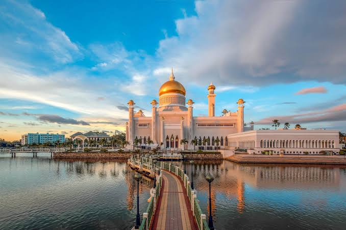
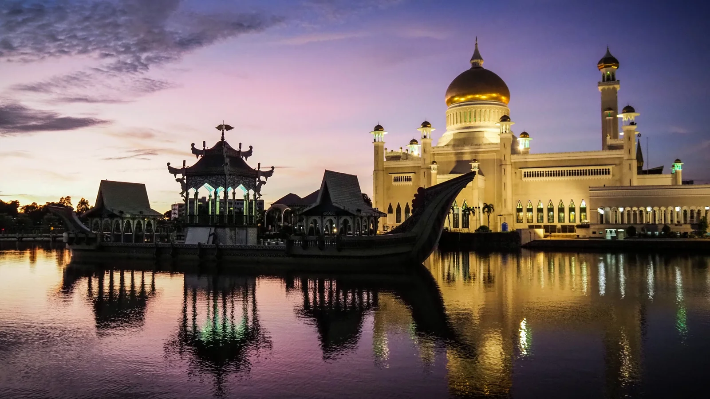
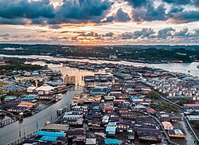
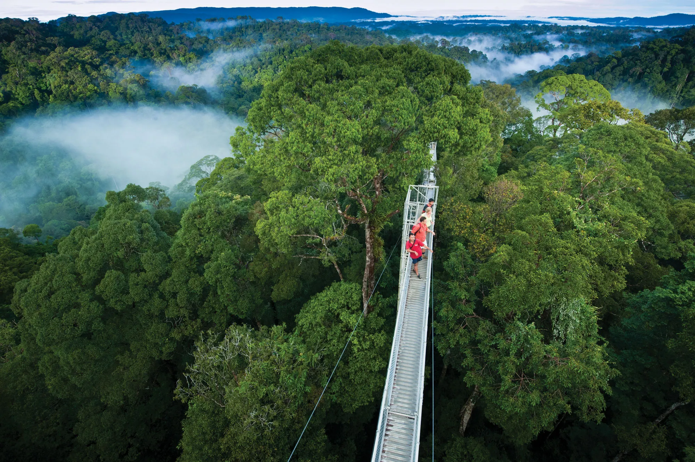
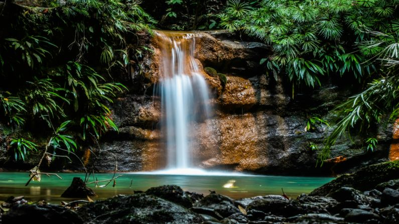
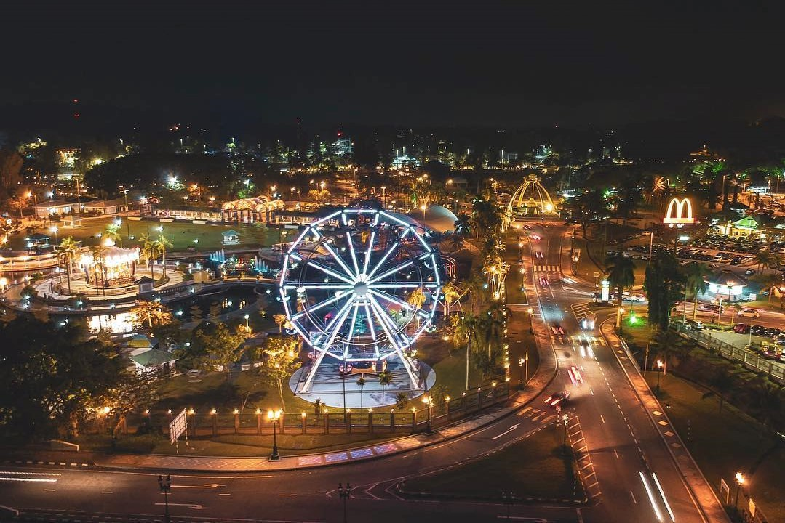
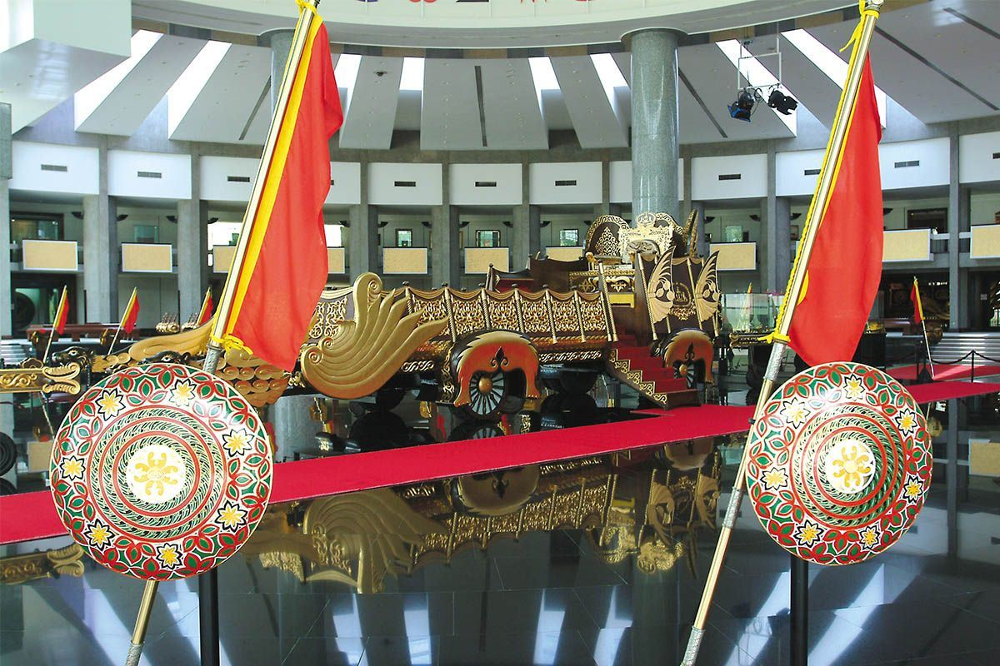

From majestic mosques to ancient rainforest, explore the best of Brunei.

An architectural masterpiece with a lagoon, marble minarets and a golden dome. Open to visitors outside prayer times.

Watch the sunset paint the sky in purple and gold behind the mosque and the traditional royal barge (Mahligai).

Explore the 1,000-year-old water village on a traditional perahu boat. Visit homes, schools and mosques on stilts.

Journey into pristine rainforest and climb the famous canopy walkway for breathtaking views above the mist.

Cool off in the crystal-clear turquoise pools of Brunei's hidden jungle waterfalls after a trek through the forest.

A large amusement park with rides and attractions, perfect for families. It was famously built as a gift from the Sultan to the people.

Housing ancient artefacts, Islamic art, and exhibits on the country's history and oil discovery. Free entry.